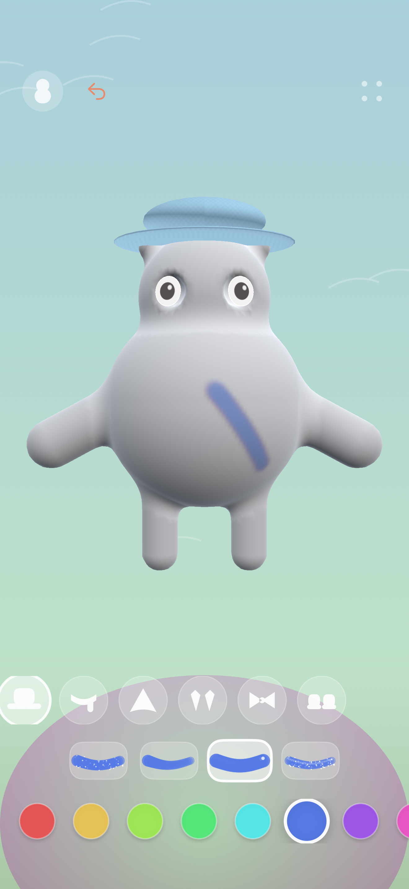
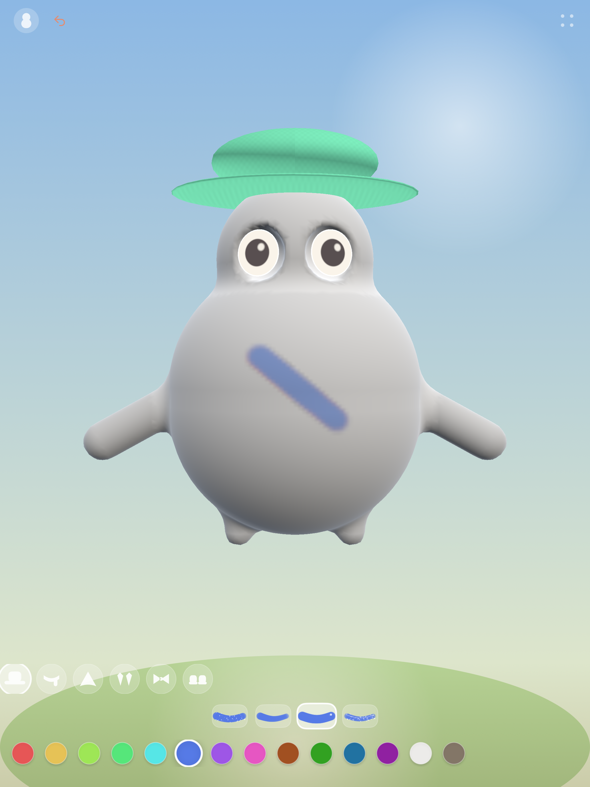

Renk seçin
Pastel boya, suluboya, sır veya simi deneyin. Doğrudan karakterin 3D yüzeyini boyayın.
iPhone ve iPad için küçük bir boyama stüdyosu
Bir renk seçin. Bir fırça izi bırakın. Küçük bir şapka ekleyin. Seramik karakterinize kendinize özgü bir görünüm kazandırın.
Bisque’yi App Store’dan edininÜcretli uygulama · Tek satın alma · Uygulama içi satın alma yok
iPhone ve iPad. Apple Watch eşlikçisi de dahil.

Pastel boya, suluboya, sır veya simi deneyin. Doğrudan karakterin 3D yüzeyini boyayın.
Karakterinizi döndürmek için arka planda sürükleyin. Bir dokunuşla şapka, atkı veya başka bir kıyafet ekleyin.
Mevcut boyama ve giysiler bu cihazda saklanır. Son çizgileri geri alabilir veya hazır olduğunuzda baştan başlayabilirsiniz.

Kendi hızınızda, özgürce oynayın
Reklam, abonelik, sohbet, hesap veya süre sınırı yok. Boyama çevrimdışı çalışır. Renkler karakterin oyun içindeki ruh halini belirler; yumuşak hareketler ve sözsüz sesler ona eşlik eder.
Ruh hali hayal gücünün bir parçasıdır. Bisque, bir çocuğun duygularını veya gelişimini değerlendirmez.
14 rengin, dört boyama aracının ve altı giysi ve aksesuarın tamamı dahildir. Uygulama içi satın alma veya abonelik yoktur. Bölgenizdeki güncel fiyatı App Store’da görebilirsiniz.
Mevcut çalışmanız bu cihazda saklanır. Hesap, çevrimiçi galeri veya cihazlar arası eser eşzamanlama yoktur. Baştan başlamak mevcut çalışmayı sıfırlar; ayrı bir koleksiyon oluşturmaz.
Hayır. Karakterinizi iPhone veya iPad’de boyayıp giydirebilirsiniz. İsteğe bağlı Watch uygulaması, eşleştirilmiş iPhone’daki karakterin türü ve oyun içindeki ruh haline göre basit bir eşlikçi gösterir. Boyama ve giysiler Watch’a aktarılmaz. Güncellemek için eşleştirilmiş iPhone’da Bisque’yi açın; aktarım cihaz bağlantısına bağlıdır.
Bisque reklam veya analiz hizmeti içermez; kamera, mikrofon veya konum erişimi istemez. Uygulamadaki destek ve gizlilik bağlantılarına erişmek için yetişkinlere yönelik bir matematik sorusunu yanıtlamak gerekir. Bu web sitesi, uygulamayı değerlendiren yetişkinler içindir.
Sizin renkleriniz. Sizin temponuz. Küçük karakteriniz.
Bisque’yi App Store’dan edininÜcretli uygulama · Tek satın alma · Uygulama içi satın alma yok
Uygulama İngilizce, Türkçe, Almanca, Fransızca, İspanyolca ve Japonca olarak kullanılabilir.